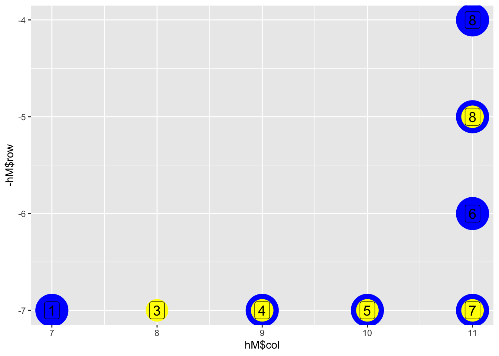
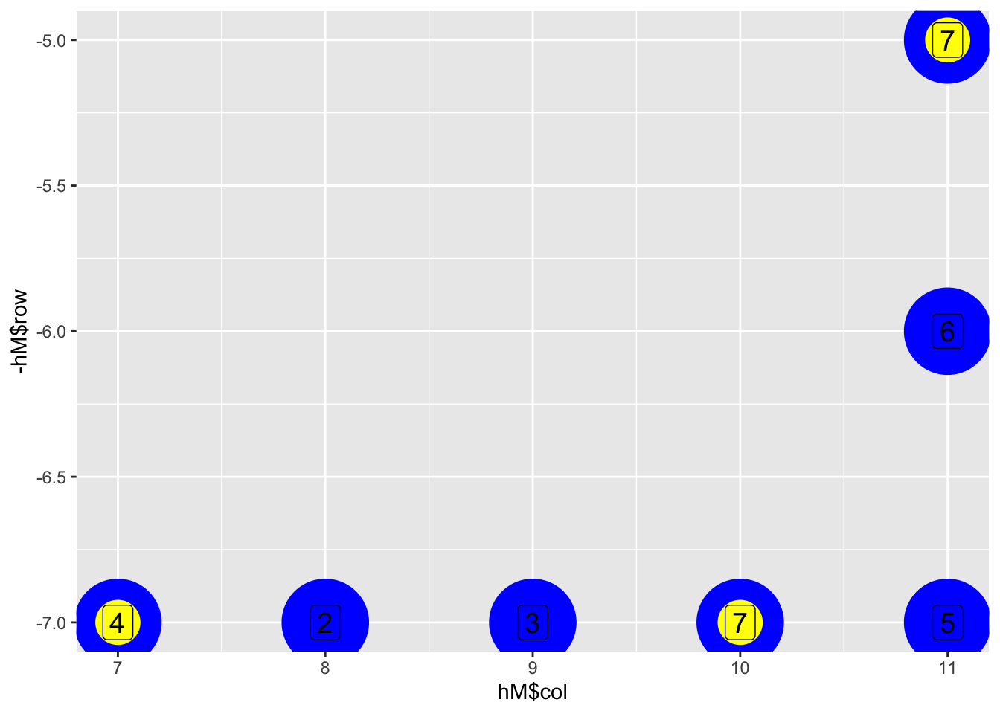

To install `mistlecode` yourself, run `devtools::install_github('guslipkin/mistlecode')`.
Also loading: cipheR data.table dplyr purrr slider stringr tidyverse2022-09: Rope Bridge
Part 1
size <- 13
# dt |>
# group_by(dir) |>
# summarise(mag = sum(mag)) |>
# pull(mag) |>
# max()
# size <- 3144
hM <- matrix(NA, size, size)
tM <- hM
size <- ceiling(size / 2)
hR <- size; hC <- size; tR <- size; tC <- size
move_h <- function(dir, mag, row, col) {
if (dir == "R") { return(list("row" = row, "col" = col + mag)) }
if (dir == "L") { return(list("row" = row, "col" = col - mag)) }
if (dir == "U") { return(list("row" = row - mag, "col" = col)) }
if (dir == "D") { return(list("row" = row + mag, "col" = col)) }
}
move_t <- function(hR, hC, row, col) {
return(list("row" = hR, "col" = hC))
}
hM[hR,hC] <- 1
hR1 <- hR; hC1 <- hC
m <- move_h(dt$dir[1], dt$mag[1], hR, hC)
hR <- m$row; hC <- m$col
m <- move_t(hR, hC, tR, tC)
tR <- m$row; tC <- m$col
hR1 <- hR; hC1 <- hC
m <- move_h(dt$dir[2], dt$mag[2], hR, hC)
hR <- m$row; hC <- m$col
plane <- c("R" = "c", "L" = "c", "U" = "r", "D" = "r")
get_h_plane <- function(hR, hC, hR1, hC1) {
if (hR == hR1 & hC != hC1) { return("r") }
else if (hR != hR1 & hC == hC1) { return("c") }
}
get_t_plane <- function(hR, hC, tR, tC) {
if (tR == hR & tC != hC) { return("r") }
else if (tR != hR1& tC == hC) { return("c") }
else { return("rc") }
}
stops <- data.frame("row" = c(), "col" = c())
sapply(3:8, \(i) {
hM[hR,hC] <<- i
tM[tR,tC] <<- i
m <- NULL
# if directly diagonal
rChange <- abs(tR - hR); cChange <- abs(tC - hC)
if (get_t_plane(hR, hC, tR, tC) == "rc") {
} else {
m <- move_t(hR, hC, tR, tC)
}
if (!is.null(m)) {
tR <<- m$row; tC <<- m$col
stops <<- rbind(stops, data.frame("row" = tR, "col" = tC))
}
# print(i)
# print(get_t_plane(hR, hC, tR, tC) == "rc" & sqrt((tR-hR)^2 + (tC-hC)^2) == 1)
hR1 <<- hR; hC1 <<- hC
m <- move_h(dt$dir[i], dt$mag[i], hR, hC)
hR <<- m$row; hC <<- m$col
return(1)
}) |> invisible()
print(tM[1:7,-1:-6]) [,1] [,2] [,3] [,4] [,5] [,6] [,7]
[1,] NA NA NA NA NA NA NA
[2,] NA NA NA NA NA NA NA
[3,] NA NA NA NA NA NA NA
[4,] NA NA NA NA NA NA NA
[5,] NA NA NA NA 8 NA NA
[6,] NA NA NA NA NA NA NA
[7,] NA 3 4 5 7 NA NA [,1] [,2] [,3] [,4] [,5] [,6] [,7]
[1,] NA NA NA NA NA NA NA
[2,] NA NA NA NA NA NA NA
[3,] NA NA NA NA NA NA NA
[4,] NA NA NA NA 8 NA NA
[5,] NA NA NA NA 7 NA NA
[6,] NA NA NA NA 6 NA NA
[7,] 1 NA 3 4 5 NA NAtM <- matrix_to_coords(tM) |> data.frame() |> filter(!is.na(data))
hM <- matrix_to_coords(hM) |> data.frame() |> filter(!is.na(data))
ggplot() +
geom_point(aes(x = hM$col, y = -hM$row), size = 15, color = "blue") +
geom_label(aes(x = hM$col, y = -hM$row, label = hM$data), size = 5, fill = "blue") +
geom_point(aes(x = tM$col, y = -tM$row), size = 10, color = "yellow") +
geom_label(aes(x = tM$col, y = -tM$row, label = tM$data), size = 5, fill = "yellow")
[1] 5size <- 13
# dt |>
# group_by(dir) |>
# summarise(mag = sum(mag)) |>
# pull(mag) |>
# max()
# size <- 3144
hM <- matrix(NA, size, size)
tM <- hM
size <- ceiling(size / 2)
hR <- size; hC <- size;
tR <- size; tC <- size
move_h <- function(dir, mag, row, col) {
if (dir == "R") { return(list("row" = row, "col" = col + mag)) }
if (dir == "L") { return(list("row" = row, "col" = col - mag)) }
if (dir == "U") { return(list("row" = row - mag, "col" = col)) }
if (dir == "D") { return(list("row" = row + mag, "col" = col)) }
}
hM[hR,hC] <- 1
hR1 <- hR; hC1 <- hC
m <- move_h(dt$dir[1], dt$mag[1], hR, hC)
hR <- m$row; hC <- m$col
plane <- c("R" = "c", "L" = "c", "U" = "r", "D" = "r")
move_t <- function(hR, hC, row, col) {
return(list("row" = hR, "col" = hC))
}
is_diag <- function(hR, hC, tR, tC) {
if ((hR == tR & hC != tC) | (hR != tR & hC == tC)) {
return(TRUE)
}
# if(abs(tR - hR) == abs(tC - hC)) { return(FALSE) }
return(FALSE)
}
tR1 <- tR; tC1 <- tC
# for(i in 2:nrow(dt)) {
sapply(2:7, \(i) {
hM[hR,hC] <<- i
tM[tR,tC] <<- i
print(i)
m <- NULL
# if ((sqrt(abs(tC - hC)^2 + abs(tR - hR)^2) > 2)) {
# m <- move_t(hR1, hC1, tR, tC)
# tR <<- m$row; tC <<- m$col
# stops <<- rbind(stops, data.frame("row" = tR, "col" = tC))
# tM[tR,tC] <<- i
# m <- move_t(hR, hC, tR, tC)
# } else if (plane[dt$dir[i]] == plane[dt$dir[i-1]]) {
# m <- move_t(hR, hC, tR, tC)
# } else if ((sqrt(abs(tC - hC)^2 + abs(tR - hR)^2) > 1)) {
# m <- move_t(hR1, hC1, tR, tC)
# }
# # if (abs(hR - tR) == abs(hC - tC)) { m <- NULL }
adj <- get_adjacent_values(tR, tC, hM)[-c(1,3,7,9)]
adj <- adj[!is.na(adj)]
j <- i - 1
print(adj)
if (length(adj) > 0 & !(j %in% adj)) {
print("here")
# m <- move_t(hR1, hC1, tR, tC)
m <- move_t(hR, hC, tR, tC)
} else {
# m <- move_h(dt$dir[i-1], dt$mag[i-1], tR, tC)
}
if (!is.null(m)) {
tR <<- m$row; tC <<- m$col
tM[tR, tC] <<- i
}
hR1 <<- hR; hC1 <<- hC
m <- move_h(dt$dir[i], dt$mag[i], hR, hC)
hR <<- m$row; hC <<- m$col
return(1)
}) |> invisible()[1] 2
[1] 1 2
[1] 3
[1] 1 2
[1] 4
[1] 1 2
[1] "here"
[1] 5
[1] 3 4 5
[1] 6
[1] 3 4 5
[1] 7
[1] 3 4 5
[1] "here" [,1] [,2] [,3] [,4] [,5] [,6] [,7]
[1,] NA NA NA NA NA NA NA
[2,] NA NA NA NA NA NA NA
[3,] NA NA NA NA NA NA NA
[4,] NA NA NA NA NA NA NA
[5,] NA NA NA NA 7 NA NA
[6,] NA NA NA NA NA NA NA
[7,] 4 NA NA 7 NA NA NA [,1] [,2] [,3] [,4] [,5] [,6] [,7]
[1,] NA NA NA NA NA NA NA
[2,] NA NA NA NA NA NA NA
[3,] NA NA NA NA NA NA NA
[4,] NA NA NA NA NA NA NA
[5,] NA NA NA NA 7 NA NA
[6,] NA NA NA NA 6 NA NA
[7,] 1 2 3 4 5 NA NAtM <- matrix_to_coords(tM) |> data.frame() |> filter(!is.na(data))
hM <- matrix_to_coords(hM) |> data.frame() |> filter(!is.na(data))
ggplot() +
geom_point(aes(x = hM$col, y = -hM$row), size = 20, color = "blue") +
geom_label(aes(x = hM$col, y = -hM$row, label = hM$data), size = 5, fill = "blue") +
geom_point(aes(x = tM$col, y = -tM$row), size = 10, color = "yellow") +
geom_label(aes(x = tM$col, y = -tM$row, label = tM$data), size = 5, fill = "yellow")
[1] 35491 6798 8032